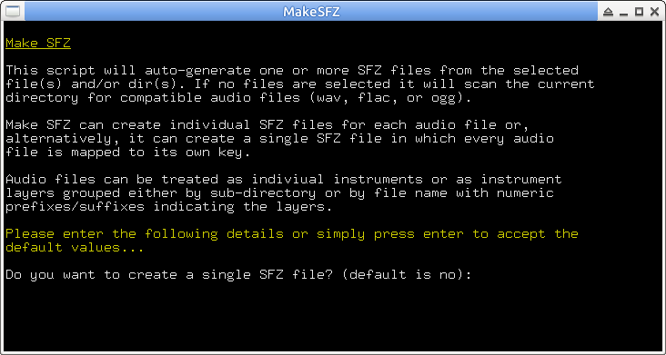

makesfz
Inspired by danboid's original makesfz.sh script http://www.remastersys.com/forums/index.php?topic=1951.0
By default, running makesfz with no arguments creates individual SFZ files for every WAV file found in the current directory. Samples are mapped across the entire keyboard with pitch_keycenter set to MIDI key C4 (middle C).
Alternatively, running 'makesfz -s' creates a single SFZ file named after the current directory. Each WAV file found is mapped to its own MIDI key, by default starting at C4. The file name can be set with the -n option.
The script allows a key range and the "key center" to be specified, a specific MIDI channel can be set, and WAV, FLAC, or OGG files can be used. Keys can be specified either by name (C-1 - G9, # or b allowed) or by MIDI key number (0 - 127).
For example, to set a key range from C2 - C5:
makesfz --lk C2 --hk C5
To create a single SFZ where the first sample starts on C3 and "one shot" is required:
makesfz -s -k C3 -1
Audio files can be treated as indiviual instruments or as instrument layers grouped either by sub-directory or by file name with numeric prefixes/suffixes indicating the layers.
For example, if the "layer marker" is set to "prefix":
00 kick1.flac
01 kick1.flac
02 kick1.flac
03 kick1.flac
become layers of kick1, and
1_kick2.flac
2_kick2.flac
3_kick2.flac
4_kick2.flac
become layers of kick2.
To scan for files inside a directory, pass the directory name to makesfz like so:
makesfz --files 'dir_name'
To scan for files grouped by sub-directory inside a directory use:
makesfz -L dirs --files 'dir_name'
Options to reverse the sort order and to run the script in "interactive mode" are also available. To see the full list of options:
makesfz -h
For convenience of use, place the script in a directory included in the PATH environment variable (e.g. /usr/bin or /usr/local/bin).
makesfz requires bash v4.
Make SFZ
This is a Nautilus script to invoke makesfz. Any selected files will be passed as arguments to makesfz. The script assumes that makesfz is installed in a directory included in the PATH environment variable (e.g. /usr/bin, /usr/local/bin) and that xterm is available.
Near the top of the script are variables that may be modified if you need to specify the file path of makesfz or if you wish to use a terminal emulator other than xterm:
MAKESFZ_PATH="makesfz"
TERMINAL_COMMAND="xterm -hold -title MakeSFZ -font 9x15 -e"
Place the script in the Nautilus scripts directory, e.g. '~/.gnome2/nautilus-scripts'. If Nautilus Scripts Manager is installed, place the script in '/usr/share/nautilus-scripts'.
makesfz.desktop
KDE service menu .desktop file to invoke makesfz. It assumes that makesfz is installed in a directory included in the PATH environment variable (e.g. /usr/bin, /usr/local/bin).
Place the .desktop file in one of the service menu directories, e.g. '/usr/share/services/ServiceMenus'.
You can find the location of all service directories like so:
kde4-config --path services